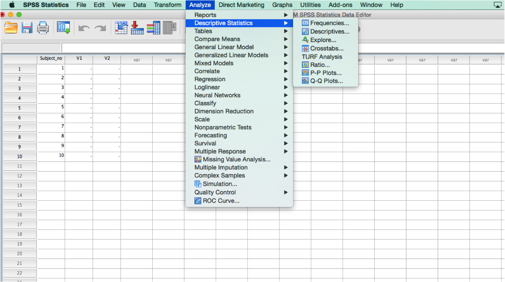

How To Complete Your Mission: Step by Step
- On paper, draw a table with three columns: Subject number, variable #1, and variable #2.
- Collect data and report it in your table.
- Define your variables in SPSS.
- Enter your data into SPSS.
- Find z scores for each participant, for each variable.

- Calculate the correlation coefficient between the two variables.
- Save your data AND output with your team name in the file names.
- Copy and paste your output ("Correlation Matrix") from SPSS into a Microsoft Word document.
- Under the matrix you pasted into your document, type the strength and direction of the correlation coefficient.
- Email
statsspring2016@gmail.com with your EMPLIDs and 3 files (2 SPSS files and 1 Word document) attached.
Back to Mission Page